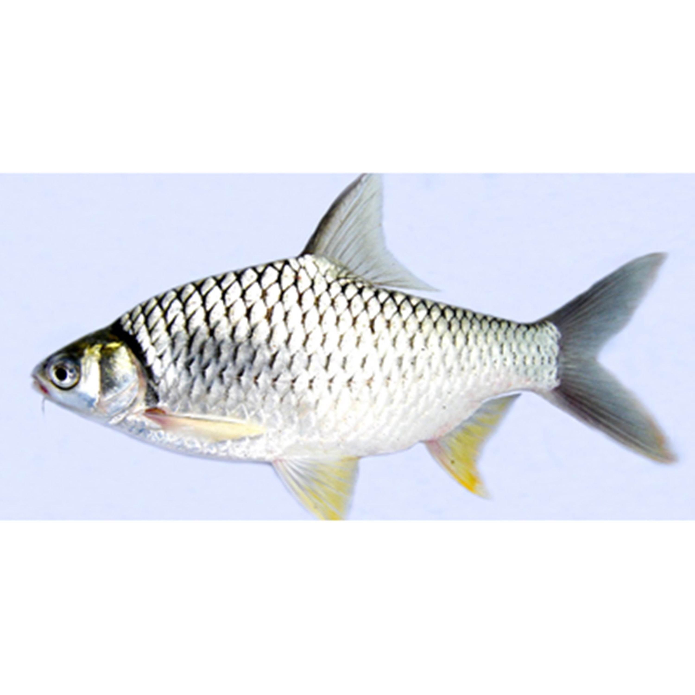

Ikan Tawes
kan tawes merupakan salah satu ikan asli perairan Indonesia terutama dipulau Jawa. Hal ini juga yang menyebabkan ikan tawes memiliki nama ilmiah Puntius javanicus. Namun setelah beberapa waktu, berubah menjadi Puntius gonionotus, dan nama latin ikan ini terakhir berubah menjadi Barbonymus gonionotus sampai sekarang. Ikan tawes memiliki nama lokal tawes (Indonesia), taweh atau tawas, lampam Jawa. Sedangkan didanau Sidendreng ikan tawes disebut bale kandea.
Meski sebenarnya ikan tawes adalah ikan yang termasuk herbivore atau pemakan tumbuhan, namun ikan tawes yang sudah dikembang biakkan di kolam dapat diberi makan pelet atau makanan alami berupa daunt talas. Perkembangan ikan di kolam akan jauh lebih cepat karena pola makan yang cukup dan teratur dan tujuannya adalah sebagai ikan konsumsi menyebabkan ikan tawes jarang di gunakan sebagai ikan pancingan di kolam–kolam pancing.
Kandungan Ikan Tawes
| Protein (%) | Kalori (Kal) | Lemak (%) | Besi (mg) | Kalsium (mg) | Fosfor (mg) | Vit A (SI) | Vit B1 (mg) | Air (%) | BDD (%) |
|---|---|---|---|---|---|---|---|---|---|
| 19 | - | 13 | - | 48 | 150 | 150 | 0,1 | - | - |
Manfaat Ikan Tawes
- Menunjang aktivitas sehari-hari
- Meminimalisir risiko osteoporosis
- Mencegah datangnya penyakit kardiovaskular
- Memelihara kesehatan mata
Manfaat ikan tawes yang pertama adalah untuk memenuhi kebutuhan kalori kita dan pastinya sangat bermanfaat untuk menunjang aktivitas sehari-hari supaya tetap lancar dan badan tidak terasa lemas. Manfaat kalori sangat bisa didapat dari kandungan ikan tawes ini karena kalori adalah zat tertinggi yang ada pada ikan ini, lebih tepatnya 198 kalori tiap ikan. Sebaliknya, jika kebutuhan kalori kita tidak terpenuhi dalam sehari maka kita akan cenderung lemas dan mudah jatuh sakit.
Tidak bisa dipungkiri jika fosfor memiliki banyak manfaat untuk tubuh, dan manfaat fosfor bisa kita dapat dari ikan yang satu ini. Kandungan fosfor sebanyak 150 mg pada tiap ikan tawes sangatlah bermanfaat untuk menjaga kesehatan tulang dan gigi – alias meminimalisir terjadinya osteoporosis pada kita di kemudian hari. Fosfor adalah salah satu zat yang penting untuk menyusun struktur tulang dengan cara mengendap pada matriks tulang. Bukan hanya osteoporosis saja sebagai bentuk akibat kita kekurangan asupan fosfor, namun juga bisa dalam bentuk kerusakan gigi atau kita yang mudah terserang penyakit – alias metabolisme tubuh yang lemah.
Bukanlah rahasia lagi jika manfaat omega 3 untuk kesehatan tubuh kita sangat beragam dan tentu saja kita ingin mendapatkan manfaat yang satu ini – dan salah satunya adalah dengan mengonsumsi ikan tawes. Asam lemak omega 3 sangatlah efektif untuk mengontrol tekanan darah dan juga mengurangi kadar trigliserida pada darah.
Untuk menjaga kesehatan mata, kita bisa mendapatkannya dari mengonsumsi ikan tawes ini secara rutin karena ikan tawes memiliki kandungan vitamin A sebanyak 150 mg tiap ikan dan hal ini sangatlah bermanfaat untuk memenuhi kebutuhan vitamin A kita tiap harinya.Manfaat vitamin A sangatlah beragam untuk kita bukan? Selain dengan tambahan vitamin A, kita juga bisa mengonsumsi berbagai bahan alami lainnya untuk menjaga kesehatan mata kita seperti yang kita ketahui sebelumnya pada manfaat teh untuk mata atau manfaat takokak.